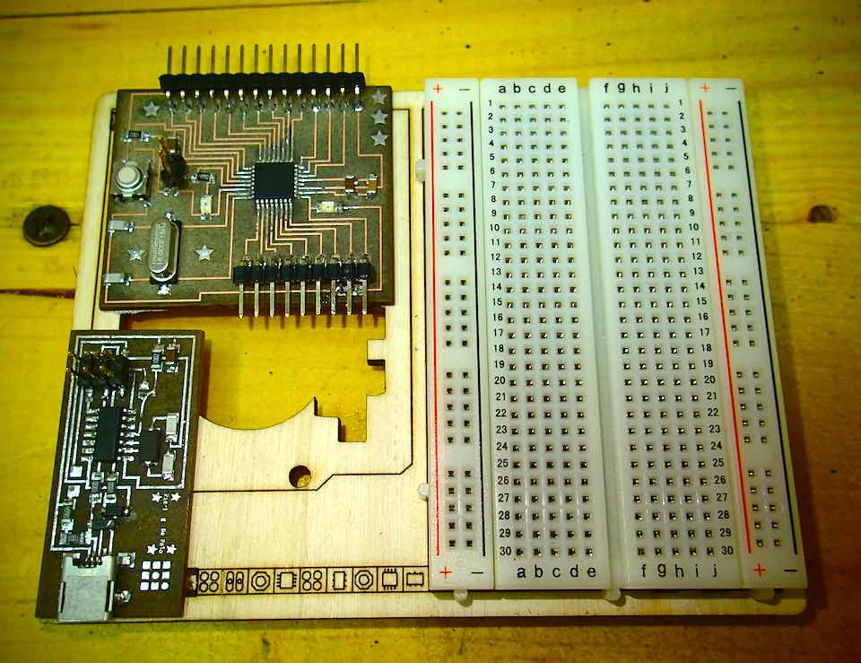
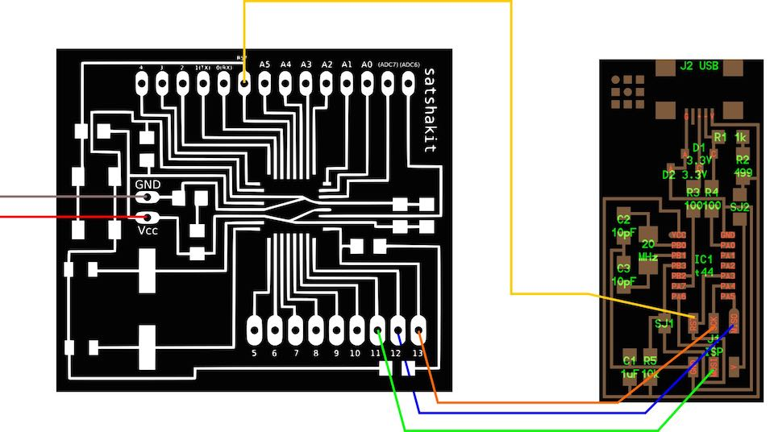
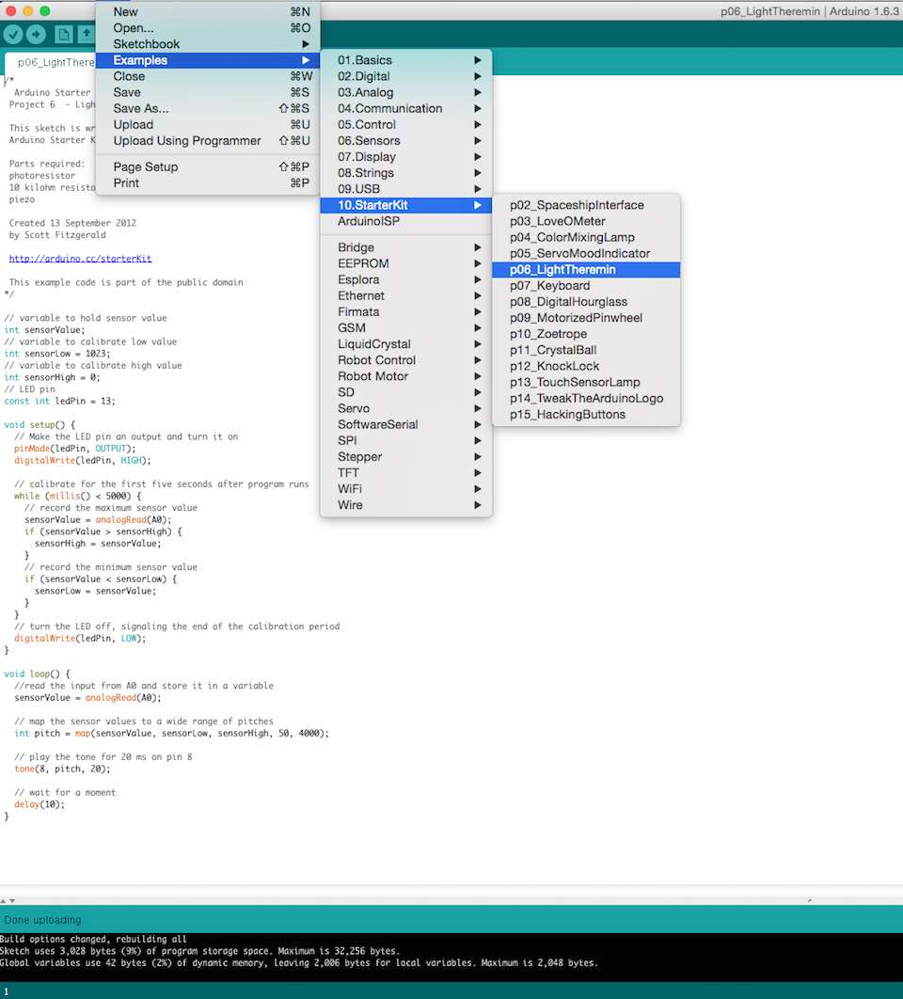
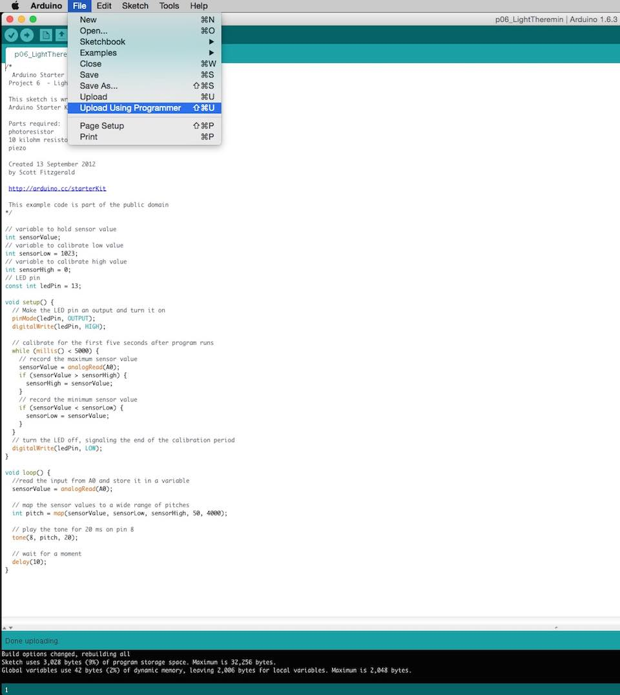

****************************************************************************************************************
ASSIGNMENT: ADD A SENSOR TO A MICROCONTROLLER BOARD THAT YOU'VE DESIGNED AND READ IT
PROJECT: EXERCISE N°6 OF ARDUINO PROJECT BOOK - LIGHT THEREMIN -
INPUT SENSOR: PHOTORESISTOR
SOFT: IDE ARDUINO 1.6.3BOARD: SATSHA KIT BY --> DANIELE INGRASSIA // GIT HUB REPOSITORY OF THE PROJECT
DATASHEET: MICROCONTROLLER ATMEGA 328P DATASHEET
NOTE: MY FIRST ARDUINO PROJECT EVER :-)
****************************************************************************************************************
1ST PART --> MAKE A HOME MADE ARDUINO
For the realizzaione of the Design of my bord, I have use the project of Daniel Ingrassia of my Fab Academy Class.
What I have done :
1--> I have lasered and engraved the board following the experience did in WEEK 4 et WEEK 6
2--> Sold the components following skematic
2ND PART --> CONNECT FAB ISP TO THE BOARD FOR PROGRAMMING
When the board was ready I have followed this process for programming it :
Connected this pin list, looking FabISP Labeled Board reference and Satsha Kit Pin Mapping :
MOSI (Master Output Slave Input) in Fab ISP to --> board pin 11
MISO (Master Input Slave Output) in Fab ISP to --> board pin 12
SCK (Serial Clock) in Fab ISP to --> board pin 13
RST (Reset ) in Fab ISP to --> board pin RST




Connect the FTDI (Future Technology Devices International) cable with red (+) and black (-) pins, to the Fab Kit following the map
(Connect FIRST the USB cable between the Fab ISP and computer and for SECOND the Fab Kit with the FTDI cable to computer)
Now the 2 boards are powered and we are ready to upload Bootloader.

3RD PART--> LOAD BOOTLOADER WITH IDE ARDUINO 1.6.3


DONE BURNING !!! Now the board has the Bootloader :-)
4TH PART -->BUILD THE CIRCUIT FOR A LIGHT THEREMIN
Elements : 1 Piezo # 10 Kilohm Resistor # 1 Photoresistor


5TH PART --> THE CODE

/*
Arduino Starter Kit example
Project 6 - Light Theremin
This sketch is written to accompany Project 6 in the
Arduino Starter Kit
Parts required:
photoresistor
10 kilohm resistor
piezo
Created 13 September 2012
by Scott Fitzgerald
http://arduino.cc/starterKit
This example code is part of the public domain
*/
// variable to hold sensor value
int sensorValue;
// variable to calibrate low value
int sensorLow = 1023;
// variable to calibrate high value
int sensorHigh = 0;
// LED pin
const int ledPin = 13;
void setup() {
// Make the LED pin an output and turn it on
pinMode(ledPin, OUTPUT);
digitalWrite(ledPin, HIGH);
// calibrate for the first five seconds after program runs
while (millis() < 5000) {
// record the maximum sensor value
sensorValue = analogRead(A0);
if (sensorValue > sensorHigh) {
sensorHigh = sensorValue;
}
// record the minimum sensor value
if (sensorValue < sensorLow) {
sensorLow = sensorValue;
}
}
// turn the LED off, signaling the end of the calibration period
digitalWrite(ledPin, LOW);
}
void loop() {
//read the input from A0 and store it in a variable
sensorValue = analogRead(A0);
// map the sensor values to a wide range of pitches
int pitch = map(sensorValue, sensorLow, sensorHigh, 50, 4000);
// play the tone for 20 ms on pin 8
tone(8, pitch, 20);
// wait for a moment
delay(10);
}
